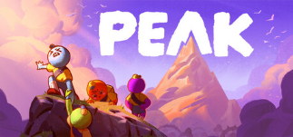
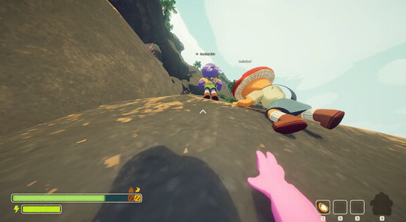
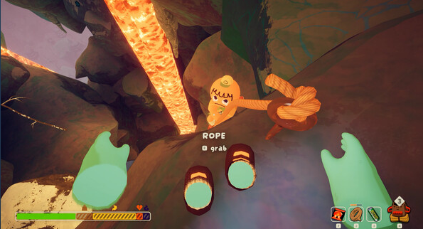

Olá, Gabriel!
Como está o seu dia?
Vim através deste HTML te convidar para jogar um jogo da Steam que já conhecemos. Provavelmente você já deve saber qual é. Aquele que nunca zeramos até hoje kkkkkk
Peak




Como está o seu dia?
Vim através deste HTML te convidar para jogar um jogo da Steam que já conhecemos. Provavelmente você já deve saber qual é. Aquele que nunca zeramos até hoje kkkkkk
Fim de semana. A hora que conseguir